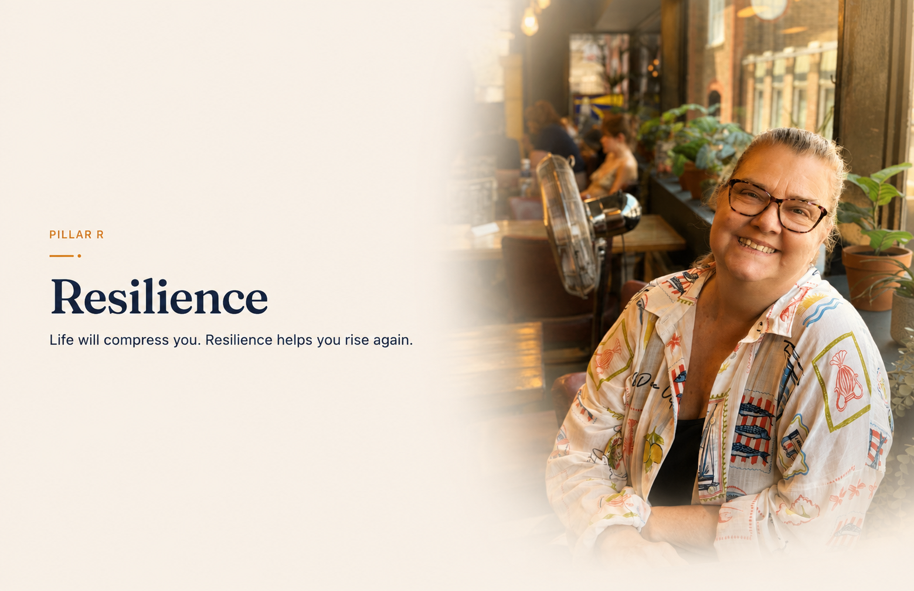

Resilience
Pillar R. Life will compress you. Resilience helps you rise again.
Life will challenge every one of us. Resilience isn’t about avoiding difficult times. It’s about learning how to recover, adapt and keep moving forward, one step at a time.
Resilience is a skill, not a personality trait. Which means it can be taught, practised and strengthened, in a single workshop or over a lifetime.
And coming back is not the same as bouncing back: real resilience makes room for what was hard, then builds something sturdier from it.
The Starting Point
Why Life Compresses Us
One of the biggest misconceptions about resilience is believing that if life is hard, you’ve somehow failed.
You haven’t.
Life compresses every one of us.
Sometimes through illness.
Sometimes through grief.
Sometimes through losing a job.
Sometimes through the end of a relationship.
Sometimes through deadlines, stress or simply trying to keep everything together.
Often it’s the things we never expected.
Things we couldn’t control.
Compression isn’t failure.
It’s life.
Compression isn’t a sign that you’re weak.
It isn’t something you’ve brought upon yourself.
It’s simply part of being human.
The question isn’t whether life will compress you.
The question is…
What will you do when it does?
A Core Teaching Concept
The Resilience Spring™
Compression
Life happens.
Pressure happens.
Unexpected things happen.
Sometimes we lose people.
Sometimes we lose jobs.
Sometimes we lose confidence.
Sometimes illness changes everything.
Compression isn’t failure.
It’s life.
The Dance
Long before I understood resilience, I learnt something through dance.
Before you leap…
you bend.
You don’t fight the bend.
You don’t skip the bend.
You bend.
You breathe.
Then you rise.
As dancers we were always taught to use the floor.
The bend wasn’t weakness.
It created the energy for the leap.
Years later I realised life had been teaching me exactly the same lesson.
Why Bouncing Doesn’t Work
People often tell us to “bounce back.”
But bouncing isn’t resilience.
When you bounce from nowhere, you end up bouncing all over the place.
You keep trying different things.
You hit brick walls.
You waste energy.
You don’t arrive where you really need to be.
A ball has no direction.
A spring rises with purpose.
You don’t bounce back to who you were.
You rise into who you’re becoming.
Why Spiralling Is Dangerous
Spiralling is different.
When we spiral we keep travelling down.
Problems feel bigger.
Hope feels smaller.
Everything begins to look impossible.
Eventually it’s difficult to even look up.
It’s like standing inside a tornado.
You’re being thrown around without feeling in control.
The deeper the spiral becomes, the harder it is to climb back out.
Breathe
One of the hardest things to do when life compresses us is breathe.
Ironically, it’s one of the most important.
Slow breathing helps calm the body’s stress response.
It activates the parasympathetic nervous system and reduces the fight, flight or freeze response.
As your body begins to calm, your thinking becomes clearer.
Sometimes the first step isn’t solving the problem.
It’s calming yourself enough to see the next step.
One breathing technique I love is simple.
Take a slow breath in.
Then another little inhale right at the end.
A final tiny sniff.
Then slowly breathe out.
It takes only seconds.
Yet it can completely change how you feel.
Rise
The Resilience Spring™ isn’t about bouncing back.
It’s about rising with purpose.
Not back to who you were.
Into who you’re becoming.
Tools & Practices
Ways to practise Resilience
Breathe
Slow your breathing before reacting.
A calm body makes better decisions.
Laugh
Laughter interrupts the stress response.
You’re not laughing at the situation.
You’re changing how your brain responds to it.
Reframe
Either change what’s happening…
or change the way you’re looking at it.
There is nearly always another perspective.
Gratitude
Every evening I think about at least one thing I’m grateful for.
Sometimes it’s something big.
Sometimes it’s simply a smile.
Or a cup of coffee.
Gratitude changes the way I finish today…
and the way I begin tomorrow.
Help Someone
Helping someone else often helps us heal too.
One of the greatest lessons of my life came through volunteering.
Watching someone arrive feeling hopeless…
and leave believing tomorrow might be different…
reminds me that hope is contagious.
Ask for Help
One of the biggest lessons I ever learnt was learning to receive.
I went to The Lighthouse believing I was there to help others.
Instead, Bex gently told me that perhaps it was my turn to receive.
She was right.
Receiving help gave me the strength to begin helping others again.
Tiny Steps
After life has compressed you, don’t try to change everything.
One tiny step is enough.
One new habit.
One conversation.
One smile.
One walk.
Tiny steps don’t feel impressive today.
But they build extraordinary futures.
Move
Movement changes everything.
You don’t need a gym.
You don’t even need to know how to dance.
Put on your favourite song.
Dance around your bedroom.
Move your arms.
Smile.
Laugh.
One of my favourite things is dancing with the lights turned off.
Nobody worries what they look like.
Everyone simply enjoys the music.
Movement changes your chemistry.
Your energy.
Your mood.
Sometimes the quickest way to help your mind…
is simply to move your body.
Tiny Steps
After life has compressed you, it’s important not to rush.
Compression can leave us feeling fragile.
Trying to change everything at once rarely works.
One tiny step is enough.
One new habit.
One different choice.
One conversation.
One walk.
One smile.
One thing.
Tiny steps don’t feel impressive today.
But they add up.
Before you realise it, you’ve travelled much further than you ever imagined.
The comeback isn’t built in giant leaps.
It’s built one tiny step at a time.
A question to sit with
What is one tiny step you could take today that would help you rise tomorrow?
Want to go deeper into Resilience?
Continue exploring The L.A.U.G.H.T.E.R. Method®